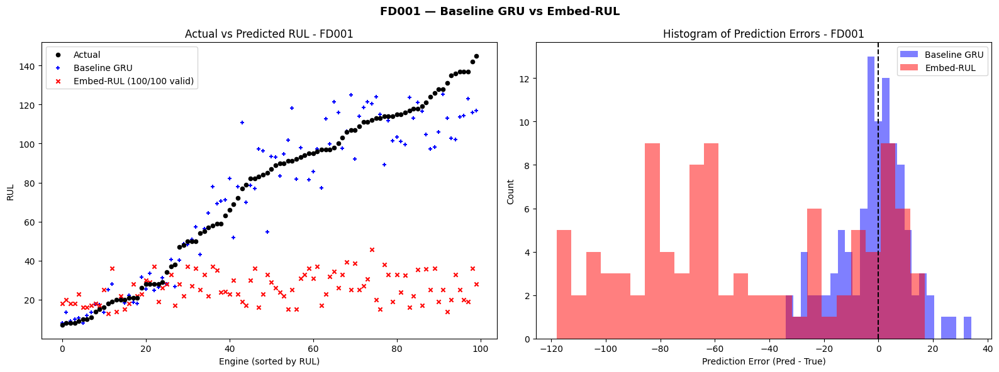
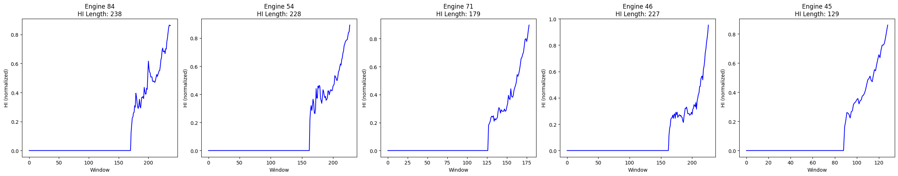
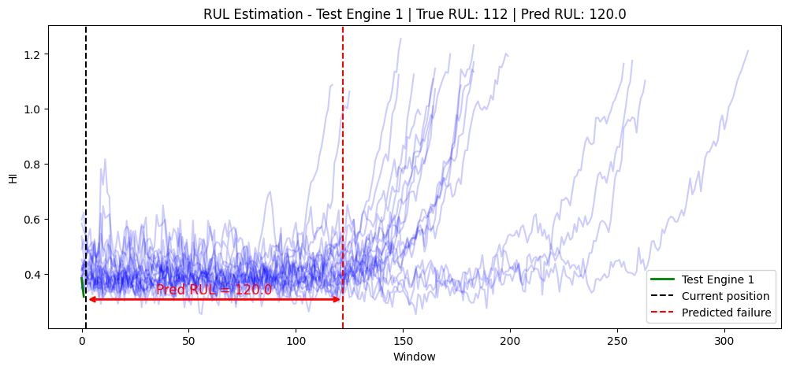
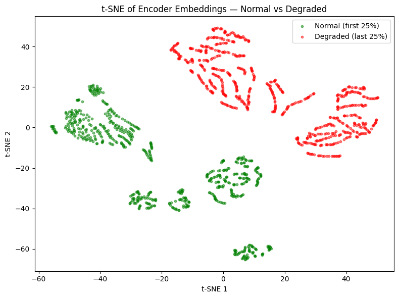

GRU Baseline vs. Embed-RUL Autoencoder — NASA C-MAPSS Turbofan Dataset
This project implements and compares two deep learning architectures for Remaining Useful Life (RUL) prediction on the NASA C-MAPSS turbofan engine degradation dataset. A two-layer GRU baseline trained with an asymmetric scoring loss achieves RMSE 13.17 cycles on the FD001 in-distribution test set. Embed-RUL, an encoder-decoder architecture with a learned Health Indicator achieves RMSE 64.02 on FD001 but fails entirely on multi-condition subsets (FD002, FD004) where test engine lifetimes exceed all training references. t-SNE visualizations confirm that distribution shift drives embedding-space failure. Statistical testing (paired t-tests, p < 10⁻⁶) confirms GRU significantly outperforms Embed-RUL on all comparable subsets.
Problem: Turbofan engines degrade continuously from first flight to failure. Unplanned failures cost airlines an estimated 10× more than scheduled maintenance and carry safety risks. Predictive maintenance requires estimating the Remaining Useful Life (RUL) — how many flight cycles remain before a failure threshold is crossed from real-time sensor data.
The NASA C-MAPSS (Commercial Modular Aero-Propulsion System Simulation) dataset [1] provides run-to-failure trajectories for hundreds of simulated turbofan engines, with 21 sensor channels recorded per cycle. The challenge is multivariate time-series regression: given a window of recent sensor readings, predict the scalar RUL.
Two architectures are evaluated: a GRU baseline trained end-to-end with a domain-appropriate asymmetric loss, and Embed-RUL [2], a similarity-based method that learns engine embeddings and estimates RUL by matching against a library of reference Health Indicator (HI) curves.
A key design choice is the asymmetric scoring loss: in safety-critical applications, predicting too-late (underestimating remaining life) is worse than predicting too-early. The loss penalizes overprediction (dᵢ ≥ 0) more heavily than underprediction:
where dᵢ = ŷᵢ − yᵢ (predicted minus true RUL). Overprediction penalty exponent 1/10 > underprediction exponent 1/13.
C-MAPSS contains four subsets (FD001–FD004) spanning different operating conditions and fault modes. Models are trained exclusively on FD001 (80 engines train, 20 validation) and evaluated on all four subsets to assess generalization.
| Subset | Training Engines | Training Rows | Operating Conditions | Fault Modes |
|---|---|---|---|---|
| FD001 | 100 | 20,631 | 1 | 1 |
| FD002 | 260 | — | 6 | 1 |
| FD003 | 100 | — | 1 | 2 |
| FD004 | 248 | — | 6 | 2 |
Preprocessing:

The HI maps each engine's embedding trajectory onto a [0, 1] degradation signal by computing the distance from the embedding to a reference set of "normal-state" embeddings (Z_norm, first 25% of engine life). The HI increases monotonically from near-zero (healthy) toward its maximum (near-failure), providing an interpretable degradation signal without labeled RUL targets during encoder training.
At test time, the encoder embeds the test engine's trajectory. The resulting HI curve is compared against all 80 reference HI curves using exponential similarity weighting (λ = 0.005). A valid prediction requires that the test curve length does not exceed the reference curve length (t_D + T ≤ T_ref) a constraint that fails entirely for longer-lived FD002/FD004 engines.

Both models were trained exclusively on FD001 and evaluated on all four subsets. The GRU produces a prediction for every test engine; Embed-RUL is limited to engines where a valid embedding match exists.


| Subset | Model | RMSE | MAE | A(%) ±10 cyc | FPR (%) | FNR (%) | Mean Error | Valid Preds |
|---|---|---|---|---|---|---|---|---|
| FD001 1 cond, 1 fault |
GRU | 13.17 | 9.79 | 60.0% | 25.0% | 15.0% | −1.86 | 100/100 |
| Embed-RUL | 64.02 | 52.33 | 23.0% | 73.0% | 4.0% | −49.75 | 100/100 | |
| FD002 6 cond, 1 fault |
GRU | 118.54 | 99.81 | 6.6% | 93.4% | 0.0% | −99.80 | 256/256 |
| Embed-RUL | — | — | — | — | — | — | 0/256 | |
| FD003 1 cond, 2 faults |
GRU | 42.06 | 28.94 | 34.0% | 25.0% | 41.0% | +16.57 | 100/100 |
| Embed-RUL | 70.25 | 58.71 | 13.8% | 84.6% | 1.5% | −57.42 | 65/100 | |
| FD004 6 cond, 2 faults |
GRU | 124.53 | 108.16 | 6.6% | 93.4% | 0.0% | −108.16 | 241/241 |
| Embed-RUL | — | — | — | — | — | — | 0/241 |
Embed-RUL failure on FD002/FD004: The similarity-based RUL estimator requires that the test engine's operational lifetime does not exceed any reference curve in the training set (t_D + T ≤ T_ref). FD002 and FD004 engines operate under 6 conditions and run significantly longer than FD001 training engines no valid reference match is found for any of the 497 test engines in these subsets. This is a fundamental algorithmic limitation, not a generalization failure of the encoder itself.
GRU cross-condition breakdown: The GRU produces predictions for all engines but shows catastrophic distribution shift on FD002/FD004 (mean error −99 to −108 cycles, 93% FPR). On FD003 (same operating condition, different fault), RMSE degrades from 13 to 42 reflecting a moderate fault-mode shift that the model partially handles.
On subsets where both models produce valid predictions (FD001 and FD003), a paired t-test on absolute prediction errors tests whether the difference in performance is statistically significant.
| Subset | Comparison | t-statistic | p-value | n (pairs) | Conclusion |
|---|---|---|---|---|---|
| FD001 | GRU vs. Embed-RUL |error| | −12.95 | < 10⁻⁶ | 100 | GRU significantly lower error |
| FD003 | GRU vs. Embed-RUL |error| | −7.47 | < 10⁻⁶ | 65 | GRU significantly lower error |
Both tests reject the null hypothesis (equal errors) at α = 0.001. Despite GRU's worse timeliness score S on FD003 (S = 334,233 vs. Embed-RUL S = 105,570), the GRU's absolute RMSE advantage is statistically decisive and its 100% coverage (vs. 65/100 for Embed-RUL on FD003) is a practical requirement for deployment.
The GRU baseline demonstrates strong in-distribution performance (RMSE 13.17 on FD001) but fails to generalize to multi-condition subsets a known limitation of supervised RUL models trained on a single operating regime. Embed-RUL's learned embeddings are interpretable and show clear degradation structure in t-SNE space, but the similarity-based RUL estimator introduces a hard constraint (test lifetime ≤ training reference) that prevents deployment on longer-running engines.
Future directions include domain adaptation for multi-condition generalization, attention-based sequence models, and hybrid approaches that combine the GRU's prediction coverage with Embed-RUL's interpretable Health Indicator representation.
📄 View Full Report (PDF)